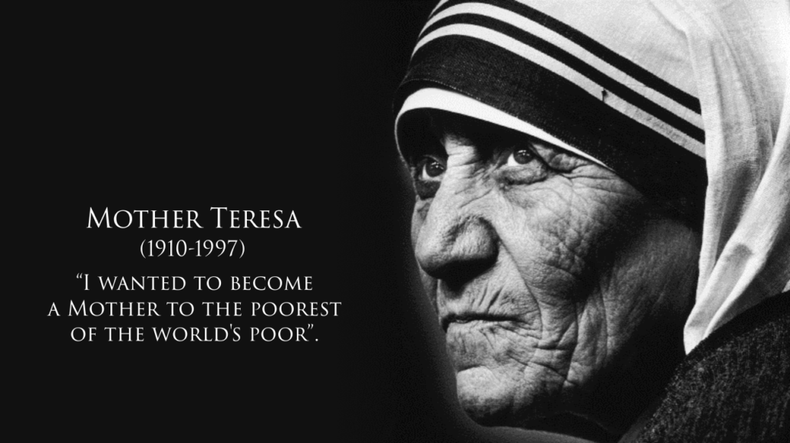

Mother Teresa: a gift to the world

Mother Teresa
Here is a timeline summary of her life(hover over the years):
- 1910Mother Teresa was born
Mother Teresa was born in Macedonia. She was named Agnes, and she later changed her name to Teresa. - 1928Agnes becomes a nun
At the age of 18, Agnes decided to dedicate herself to God's work. She became a nun and changed her name to Teresa. - 1931Sister Teresa becomes a teacher
Teresa was called Sister Teresa when she first began working at St. Mary's High School in Calcutta, India. - 1937Sister Teresa is named Mother Teresa
She became Mother Teresa when she made her Profession of the Vows. She promised to be the "Spouse of Jesus for eternity". - 1944She is promoted
In 1944 Mother Teresa became the principal of St. Mary's. - 1948Mother Teresa moves on
After seeing the poor people on the streets outside of St. Mary's, Mother Teresa asked the church leaders if she could help them. She left the school so she could minister to the poor of Calcutta. - 1957Mother Teresa opens an orphanage
Mother Teresa had a heart for the destitute, and especially for children. This led her to open her first orphanage in India. - 1969Mother Teresa establishes Missionaries of Charities
Mother Teresa worked for years with the poor. When she noticed they had no hospitals or clinics, she began working to give them medical treatment, which led to the establishment of Missionaries of Charities. - 1979She is awarded great honors
Mother Teresa was awarded many honors for her works, included the Nobel Peace Prize in 1979. Other awards were the Medal of Freedom and the Order of Merit from Queen Elizabeth. - 1980Mother Teresa the home builder
Mother Teresa established homes for people who had no place to live. She used the donations of people from around the world to pay for the homes. - 1985A center for AIDS
One of Mother Teresa's most notable works was the establishment of a center for people with AIDS. - 1990Her reach expands around the world
Other missionaries flocked to work with Mother Teresa. Soon she had missionaries continuing her work in over 40 countries. - 1997Mother Teresa's health declines
Mother Teresa continued her work even as she grew older and frail. By this time she had over 4000 workers in over 120 countries. - 1997Mother Teresa dies
Mother Teresa returned to Calcutta, India, for the last few weeks of her life. The world mourned for her when she passed. - 2003Mother Teresa is named a saint
Pope John Paul II began the process of Mother Teresa's beatification, which named her a saint. Her legend still lives, and she will forever be remembered for her acts of extreme love and kindness.
Read more about Mother Teresa here.